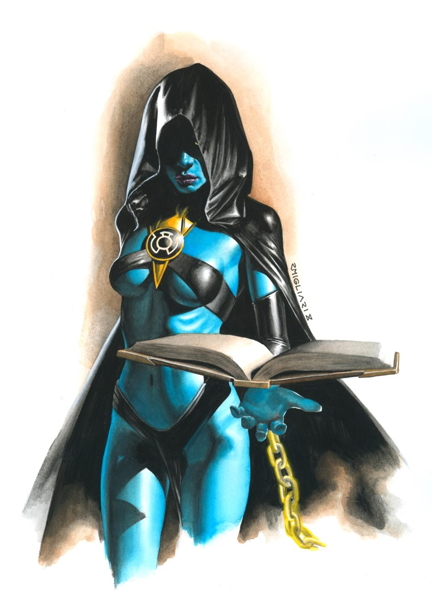

Glossary
Book of the Black
The Black Lanterns' book of prophecy — and the doom it foretold.

The story
Every Corps keeps its scripture. The Green Lanterns have the Book of Oa; the Sinestro Corps, the Book of Parallax. The dead have the Book of the Black — an ancient text of prophecy that first surfaced in the "Origins & Omens" backups of Adventure Comics #0 (April 2009) and went on to shape the entire Blackest Night saga.
The Book's prophecies read like a countdown to the end of everything: the coming of the Blackest Night, the War of Light, and the rise of the Third Army. Its most chilling passages concerned Hal Jordan himself. When Black Hand seized the Book in Green Lantern vol. 5 #12 (2012), its pages tormented him with shifting text — "Hal Jordan is not your enemy… Hal Jordan will be the greatest Black Lantern."
The Book claimed its keepers as well as its readers. Lyssa Drak — once the Sinestro Corps' own chronicler — was trapped within its pages, bound to the tome she had sought to master. Scar, the corrupted Guardian, used the Book's prophecies as her roadmap, engineering the Blackest Night from its verses.
Like all the Corps' books, the Book of the Black is more than a record: it's a weapon. Whoever controls the prophecy shapes the future — and the dead play a very long game indeed.
Artwork: Lyssa Drak by DC Comics — non-commercial fan tribute.